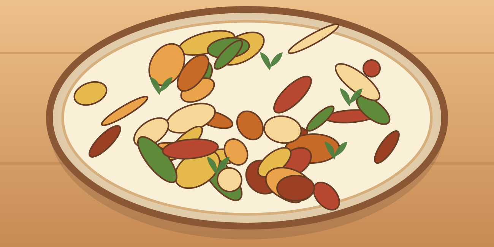

Gnocchis poêlés au poulet
Une grosse portion maison, simple à préparer, avec des légumes et des protéines.
⏱ 20 min🍽 1 grosse portion💰 ≈ 4–5 €💪 ≈ 61 g protéines≈ 840 kcal
Ingrédients
- 200 g de poulet
- 250 g de gnocchis à poêler
- 80 g d’épinards
- 100 g de tomates
- 50 ml de crème légère
- 1 gousse d’ail
- 5 ml d’huile
- Poivre et herbes
Préparation
- Couper le poulet en dés et les tomates en deux.
- Dorer le poulet avec l’huile 8 à 10 min jusqu’à cuisson complète ; réserver.
- Dans la même poêle, dorer les gnocchis selon le paquet (environ 5 min).
- Ajouter tomates, épinards, ail et crème ; cuire 2 min.
- Remettre le poulet, mélanger et servir chaud.
Conservation et réchauffage
Se conserve 2 jours au frais ; réchauffer à la poêle pour retrouver la texture.
Nutrition et prix indicatifs : à recalculer selon les marques et quantités dans MyFitnessPal. Les sauces mentionnées sont sans poisson : vérifier les étiquettes.